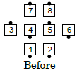
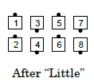
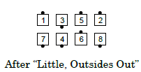
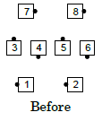
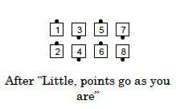
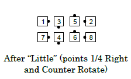

From one-quarter tag or three-quarter tag: Outsides Quarter Right, or as directed, and then Counter Rotate ¼. Centers Step and Fold. Ends in parallel waves or lines. The quartering direction for the outsides may be specified, as in "Left Little" or "Right Little" [outsides go left or right, respectively.]
  
From Diamonds, there are many ways to direct the points to Counter Rotate without turning first, including: "Little, points go as you are", "Little, Points go forward", and "Centers Start, Little". (See Glossary of Modifying Terms: Start.) The command "Little" (with no direction given) requires the points to 1/4 Right before they Counter Rotate. See the historical note below.
Consider the following two cases:
  
Historical note: In a previous definition Diamonds were a special exception because, without any words by the caller, the points would automatically go forward. Today the caller must direct the points to go "as you are".
© Copyright 1983, 1986-1988, 1995-2017 Bill Davis, John Sybalsky and CALLERLAB Inc., The International Association of Square Dance Callers. Permission to reprint, republish, and create derivative works without royalty is hereby granted, provided this notice appears. Publication on the Internet of derivative works without royalty is hereby granted provided this notice appears. Permission to quote parts or all of this document without royalty is hereby granted, provided this notice is included. Information contained herein shall not be changed nor revised in any derivation or publication.